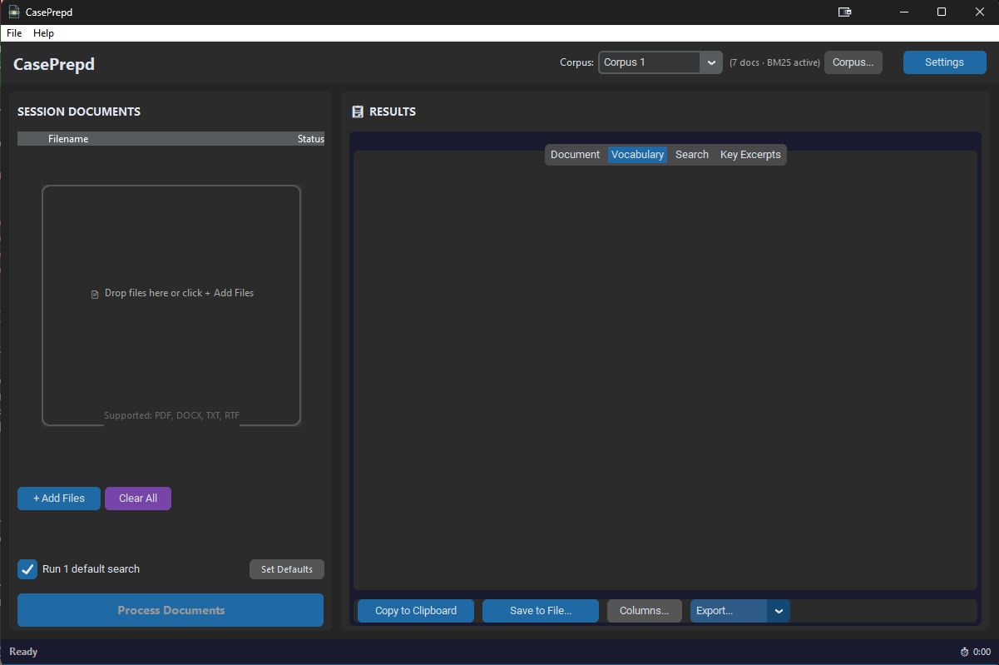
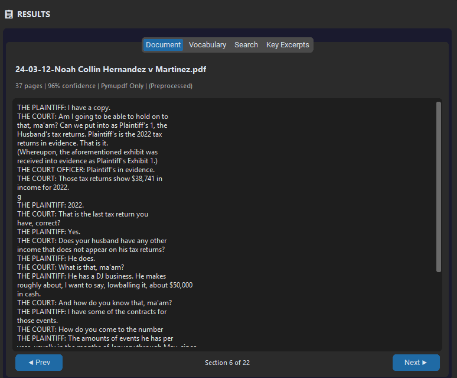
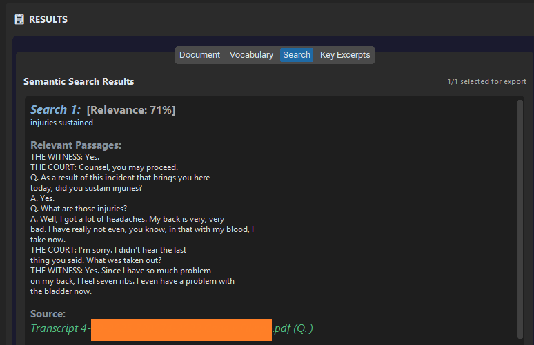
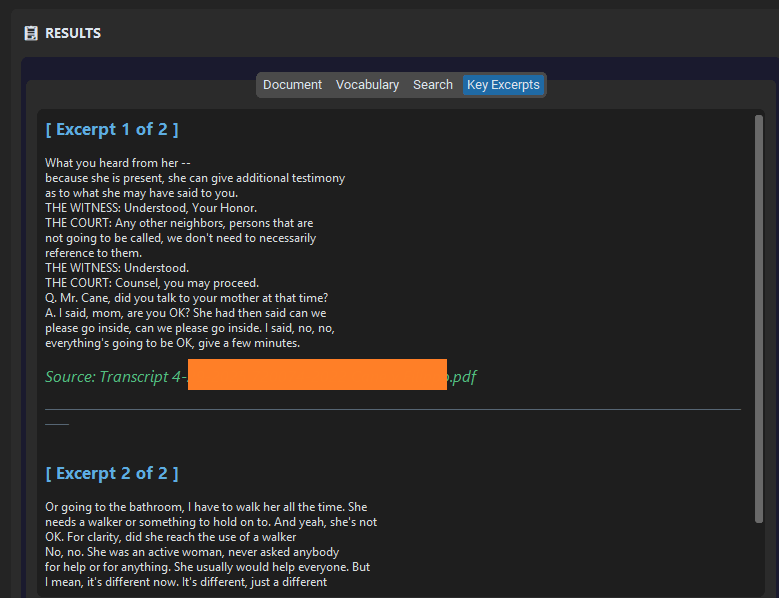

CasePrepd
Case Prep That Never Leaves Your Computer
Vocabulary lists, semantic search, and key excerpts from your case documents — processed 100% on your machine. Nothing uploaded. Nothing stored in the cloud.
Built for sensitive court matters, HIPAA, and anything you can't risk sharing.
Download CasePrepdMade with Claude Code by Noah Collin, a court reporter.
What You Get
Vocabulary Lists
Names, medical terms, legal jargon, and technical words automatically pulled from your documents. Scored by importance so you prep the terms that matter most. A built-in ML model learns your preferences over time.
Semantic Search
Ask natural-language questions about your case documents and get answers with source citations. Great for targeted questions across a breadth of documents.
Key Excerpts
Representative passages automatically selected from your documents using clustering. Helpful for quickly understanding the core content of complex cases with hundreds of pages.
Export to HTML, Word, PDF, CSV, or plain text.
Screenshots

1 2 3 4 5- Manage saved corpora for quick recall across sessions
- Drop files here or click to add PDFs, Word docs, and text files
- Switch between Document, Vocabulary, Search, and Key Excerpts tabs
- Process all loaded documents with one click
- Export results to clipboard, file, or formatted report



Who Is This For?
- Court reporters handling sealed or potentially sensitive matters
- Scopists, proofreaders, or other professionals handling case materials
- Anyone preparing for testimony with sensitive medical or financial records
- Anyone wary of sending documents to an AI cloud
How It Works
CasePrepd is a desktop app, not a web service. You load your documents (PDF, Word, text files, images with OCR), and everything is processed locally using embedded AI models. No internet connection is needed after installation.
Under the hood, CasePrepd uses FAISS vector search and a cross-encoder reranker for semantic search, spaCy NLP for entity extraction, and a trained classifier for vocabulary filtering. All models are bundled with the installer.
System Requirements
- Windows only (Windows 10 or 11)
- 16 GB RAM minimum
- 8 GB disk space minimum
- Dedicated GPU recommended for faster processing, but not required
Download
Windows SmartScreen Warning
CasePrepd is not code-signed (code signing certificates cost hundreds of dollars per year, and this is free software). When you run the installer, Windows SmartScreen may display a warning: "Windows protected your PC."
To proceed: click "More info", then click "Run anyway". The source code is fully open and available on GitHub for inspection.
FAQ
Why is this free?
I'm a court reporter who built this for my own use and wanted to share it with the community. It's open source and always will be.
Is my data really private?
Yes. CasePrepd never connects to the internet. All processing happens on your machine using models that ship with the installer. No data is uploaded, logged, or transmitted anywhere.
Do I need a GPU?
No. CasePrepd works on CPU. A dedicated GPU will speed up processing, especially for large document sets, but it is not required.
What file types are supported?
PDF, Word (.docx), plain text (.txt), and images (via built-in OCR with Tesseract). Scanned PDFs are automatically OCR'd.